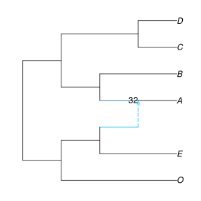
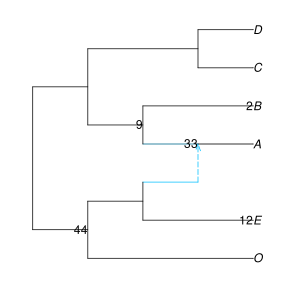
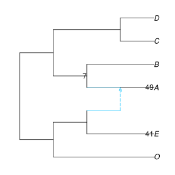

Network support
We show here how to summarize a sample of networks. This may be used to get bootstrap support or posterior probabilities for network features, if the sample of networks comes from a bootstrap analysis (as possible with SNaQ) or if it's a posterior sample of networks from a Bayesian analysis.
To demonstrate summarizing a sample of networks, we use here a sample of 100 networks, obtained by running 100 bootstrap replicates of SNaQ. The file containing the 100 networks comes with the package:
bootnet = readmultinewick(joinpath(dirname(pathof(PhyloNetworks)), "..","examples","bootsnaq.out"));
length(bootnet)100We seek to summarize what these 100 networks have in common (highly supported features) and what they don't (areas of uncertainty). Unlike for trees, there are a variety of features that we may summarize in a network. Below we show how to calculate support for tree edges, for a clade to be of hybrid origin, or for a clade to be sister to a hybrid clade, or combinations.
We also assume that we have a reference network, such as the best-fitting network on the original (non-bootstrapped) data, or some other "consensus" network. We focus on features (tree edges and clades) in this reference network and quantify the support for these features in the sample of networks.
support for tree edges
To summarize our sample of 100 networks on our reference network, it is best to re-read this network to get a reproducible internal numbering of its nodes and edges, used later for mapping support to edges. As our reference network, we use here a network with 1 reticulation (best-fitting network on the original data):
net1 = readnewick(joinpath(dirname(pathof(PhyloNetworks)), "..","examples","net1.out"))HybridNetwork, Rooted Network
12 edges
12 nodes: 6 tips, 1 hybrid nodes, 5 internal tree nodes.
tip labels: C, D, O, E, ...
(C,D,((O,(E,#H7:::0.196):0.314):0.664,(B,(A)#H7:::0.804):10.0):10.0);
It turns out that the direction of gene flow is quite uncertain in this example (see below) with a wrong direction inferred sometimes, so we re-root our reference network net1 to the base of O,E, for the figures to be less confusing later.
using PhyloPlots, RCall
plot(net1, showedgenumber=true); # edge 7 leads to O+E
rootonedge!(net1, 7) # makes (O,E) outgroup clade
plot(net1, shownodenumber=true);

Edges cross: but rotating at node -6 should remove this crossing of edges
rotate!(net1, -6)plot(net1, showgamma=true);
We can now summarize our sample of networks. The functions treeedges_support and hybridclades_support read all networks in the sample and map the edges / nodes onto a reference network, here net1.
BSe_tree, tree1 = treeedges_support(bootnet,net1);(3×2 DataFrame
Row │ edgeNumber proportion
│ Int64 Float64
─────┼────────────────────────
1 │ 13 100.0
2 │ 11 100.0
3 │ 12 100.0, HybridNetwork, Rooted Network
10 edges
11 nodes: 6 tips, 0 hybrid nodes, 5 internal tree nodes.
tip labels: C, D, O, E, ...
((O,E):0.166,((B,A):10.0,(C,D):10.0):0.498);
)This calculates the major tree tree1 displayed in net1, that is, the tree obtained by following the major parent (γ>0.5) of each hybrid node. This tree can be visualized like this, with edge numbers shown for later use.
plot(tree1, showedgenumber=true);
Next, we can look at the support table BSe_tree, which has one row for each tree edge in net1. One column contains the edge number (same as shown in the plot) and another column contains the edge (bootstrap) support: the proportion of sample networks in which this edge was found in the major tree of that network. We can see the full support table and see which tree edges have support lower than 100% (none here) with
julia> using DataFrames # for showall() belowjulia> show(BSe_tree, allrows=true, allcols=true)3×2 DataFrame Row │ edgeNumber proportion │ Int64 Float64 ─────┼──────────────────────── 1 │ 13 100.0 2 │ 11 100.0 3 │ 12 100.0julia> filter(row -> row[:proportion] < 100, BSe_tree)0×2 DataFrame Row │ edgeNumber proportion │ Int64 Float64 ─────┴────────────────────────
Finally, we can map the support values onto the reference network or its main tree by passing the support table to the edgelabel option of plot:
plot(tree1, edgelabel=BSe_tree);
plot(net1, edgelabel=BSe_tree);

(Here, it is important that the numbers assigned to edges when building the boostrap table –those in net1 at the time– correspond to the current edge numbers in tree1 and net1. That was the purpose of reading the network from the output file of snaq! earlier, for consistency across different Julia sessions.)
If we wanted to plot only certain support values, like those below 100% (1.0), we could do this:
plot(net1, edgelabel=filter(row -> row[:proportion] < 100, BSe_tree));support for hybrid edges
Summarizing the placement of reticulations is not standard. The function hybridclades_support attempts to do so.
- The descendants of a given hybrid node form the "recipient" or "hybrid" clade, and is obtained after removing all other reticulations.
- To remove the reticulations other than one of interest, their minor hybrid parent edge (with γ<0.5) is removed. If a reticulation is due to introgression, this minor edge may be interpreted as the "gene flow" edge.
- The descendants of the lineage from which gene flow originated is then a second "sister" of the hybrid clade. Because of the reticulation event, the hybrid clade has 2 sister clades, not 1: the major sister (through the major hybrid edge with γ>0.5) and the minor sister (through the minor hybrid edge with γ<0.5).
Note that the network says nothing about the process: its shows the relationships only. We can calculate the frequency that each clade is a hybrid clade, or a major or minor sister for some other hybrid, in the sample of networks:
BSn, BSe, BSc, BSgam, BSedgenum = hybridclades_support(bootnet, net1);(7×9 DataFrame
Row │ clade node hybridnode edge BS_hybrid BS_sister BS_major_sister BS_m ⋯
│ String Int64? Int64? Int64? Float64 Float64 Float64 Floa ⋯
─────┼────────────────────────────────────────────────────────────────────────────────────
1 │ H7 7 5 9 33.0 51.0 2.0 ⋯
2 │ c_minus2 -2 -2 12 0.0 55.0 53.0
3 │ E 4 4 4 12.0 41.0 0.0
4 │ c_minus4 -4 -4 7 44.0 0.0 0.0
5 │ B 6 6 8 2.0 33.0 33.0 ⋯
6 │ c_minus6 -6 -6 11 9.0 7.0 0.0
7 │ O 3 3 3 0.0 13.0 12.0
2 columns omitted, 12×8 DataFrame
Row │ edge hybrid_clade hybrid sister_clade sister BS_hybrid_edge BS_major BS ⋯
│ Int64? String Int64? String Int64? Float64 Float64 Fl ⋯
─────┼────────────────────────────────────────────────────────────────────────────────────
1 │ 10 H7 5 B 6 33.0 33.0 ⋯
2 │ 5 H7 5 E 4 32.0 0.0
3 │ missing c_minus4 -4 c_minus2 -2 44.0 44.0
4 │ missing c_minus4 -4 H7 7 44.0 0.0
5 │ missing E 4 O 3 12.0 12.0 ⋯
6 │ missing c_minus6 -6 c_minus2 -2 9.0 9.0
7 │ missing c_minus6 -6 E 4 9.0 0.0
8 │ missing E 4 c_minus6 -6 7.0 0.0
9 │ missing E 4 H7 7 5.0 0.0 ⋯
10 │ missing B 6 H7 7 2.0 2.0
11 │ missing B 6 c_minus2 -2 2.0 0.0
12 │ missing H7 5 O 3 1.0 0.0
1 column omitted, 6×8 DataFrame
Row │ taxa O E c_minus4 B H7 c_minus6 c_minus2
│ String Bool Bool Bool Bool Bool Bool Bool
─────┼──────────────────────────────────────────────────────────────────
1 │ C false false false false false false true
2 │ D false false false false false false true
3 │ O true false true false false false false
4 │ E false true true false false false false
5 │ B false false false true false true false
6 │ A false false false false true true false, [0.7678332804427751 0.2321667195572249; 0.0 0.0; … ; 0.8302741620426417 0.16972583795735827; 0.8140813408679294 0.18591865913207065], [10, 5])Let's look at the results. We can list all the clades and the percentage of sample networks (support) in which each clade is a hybrid or sister to a hybrid:
julia> BSn7×9 DataFrame Row │ clade node hybridnode edge BS_hybrid BS_sister BS_major_sister BS_m ⋯ │ String Int64? Int64? Int64? Float64 Float64 Float64 Floa ⋯ ─────┼──────────────────────────────────────────────────────────────────────────────────── 1 │ H7 7 5 9 33.0 51.0 2.0 ⋯ 2 │ c_minus2 -2 -2 12 0.0 55.0 53.0 3 │ E 4 4 4 12.0 41.0 0.0 4 │ c_minus4 -4 -4 7 44.0 0.0 0.0 5 │ B 6 6 8 2.0 33.0 33.0 ⋯ 6 │ c_minus6 -6 -6 11 9.0 7.0 0.0 7 │ O 3 3 3 0.0 13.0 12.0 2 columns omitted
If a clade contains a single taxon, it is listed with its taxon name. The clade found in the best network is listed with its tag, starting with H (e.g. "H7"). The name of other clades start with "c_" followed by their number in the best network, if they do appear in the best network. The node numbers, as used internally in the best network, are listed in a separate column. They can be used later to display the support values onto the network. Various columns give the support that each clade is a hybrid, or a (major/minor) sister to a hybrid. The last column gives the support for the full relationship in the best network: same hybrid with same two sisters. These support values are associated with nodes (or possibly, their parent edges).
To see what is the clade named "H7", for instance:
julia> BSc # this might be too big6×8 DataFrame Row │ taxa O E c_minus4 B H7 c_minus6 c_minus2 │ String Bool Bool Bool Bool Bool Bool Bool ─────┼────────────────────────────────────────────────────────────────── 1 │ C false false false false false false true 2 │ D false false false false false false true 3 │ O true false true false false false false 4 │ E false true true false false false false 5 │ B false false false true false true false 6 │ A false false false false true true falsejulia> show(BSc, allrows=true, allcols=true)6×8 DataFrame Row │ taxa O E c_minus4 B H7 c_minus6 c_minus2 │ String Bool Bool Bool Bool Bool Bool Bool ─────┼────────────────────────────────────────────────────────────────── 1 │ C false false false false false false true 2 │ D false false false false false false true 3 │ O true false true false false false false 4 │ E false true true false false false false 5 │ B false false false true false true false 6 │ A false false false false true true falsejulia> # BSc[BSc[!,:H7], :taxa] # just a different syntax to subset the data in the same way filter(row -> row[:H7], BSc).taxa1-element Vector{String}: "A"
We can also get support values associated with edges, to describe the support that a given hybrid clade has a given sister clade.
julia> BSe12×8 DataFrame Row │ edge hybrid_clade hybrid sister_clade sister BS_hybrid_edge BS_major BS ⋯ │ Int64? String Int64? String Int64? Float64 Float64 Fl ⋯ ─────┼──────────────────────────────────────────────────────────────────────────────────── 1 │ 10 H7 5 B 6 33.0 33.0 ⋯ 2 │ 5 H7 5 E 4 32.0 0.0 3 │ missing c_minus4 -4 c_minus2 -2 44.0 44.0 4 │ missing c_minus4 -4 H7 7 44.0 0.0 5 │ missing E 4 O 3 12.0 12.0 ⋯ 6 │ missing c_minus6 -6 c_minus2 -2 9.0 9.0 7 │ missing c_minus6 -6 E 4 9.0 0.0 8 │ missing E 4 c_minus6 -6 7.0 0.0 9 │ missing E 4 H7 7 5.0 0.0 ⋯ 10 │ missing B 6 H7 7 2.0 2.0 11 │ missing B 6 c_minus2 -2 2.0 0.0 12 │ missing H7 5 O 3 1.0 0.0 1 column omitted
Here, each row describes a pair of 2 clades: one being the hybrid, the other being its sister, connected by a hybrid edge. The first rows corresponds to hybrid edges in the best network. Other rows correspond to edges seen in the sample of networks but not in the reference network.
julia> BSedgenum2-element Vector{Int64}: 10 5
lists all the hybrid edges in the best network, two for each hybrid node: the major parent edge and then the minor parent edge. In our case, there is only one reticulation, so only 2 hybrid edges.
We can plot the support values of the 2 hybrid edges in the best network:
plot(net1, edgelabel=BSe[:,[:edge,:BS_hybrid_edge]]);
This is showing the support for each hybrid edge: the percentage of networks in the sample, with an edge from the same sister clade to the same hybrid clade. Alternatively, we could show the support for the full reticulation relationships in the network, one at each hybrid node (support for same hybrid with same sister clades). Here, we find that A received gene flow from E (and is sister to B otherwise) in just 32% of sampled networks. In another 1% of sampled networks, A received gene flow from another source.
plot(net1, nodelabel=BSn[!,[:hybridnode,:BS_hybrid_samesisters]]);
Below is example code to place tree edge support and hybrid edge support on the same plot.
tmp = filter(row -> !ismissing(row[:edge]), BSe) # filter rows
select!(tmp, [:edge,:BS_hybrid_edge]) # select 2 columns only
rename!(tmp, :BS_hybrid_edge => :proportion) # rename those columns, to match names in BSe_tree
rename!(tmp, :edge => :edgeNumber)
tmp = vcat(BSe_tree, tmp)
plot(net1, edgelabel=tmp, nodelabel=BSn[:, [:hybridnode,:BS_hybrid_samesisters]])support for hybrid clades
On a different plot, we can show the support for hybrid clades, first mapped to each node with positive hybrid support, and then mapped on the parent edge of these nodes. A is estimated as a hybrid in only 33% of our sampled networks. In another 44%, it is the lineage to (E,O) that is estimated as being of hybrid origin.
plot(net1, nodelabel=filter(row->row[:BS_hybrid]>0, BSn)[!,[:hybridnode,:BS_hybrid]]);
plot(net1, edgelabel=filter(row->row[:BS_hybrid]>0, BSn)[!,[:edge,:BS_hybrid]]); 
support for the origin of gene flow
We can plot the support for the various placements of the gene flow origin (minor sister clade), first mapped to each node with positive support for being the origin of gene flow, and then mapped along the parent edge of these nodes. We filtered clades to show those with sister support > 5%:
plot(net1, nodelabel=filter(r->r[:BS_minor_sister]>5, BSn)[!,[:node,:BS_minor_sister]]);
plot(net1, edgelabel=filter(r->r[:BS_minor_sister]>5, BSn)[!,[:edge,:BS_minor_sister]]); 
In our best network, the lineage to E is estimated as the origin of gene flow, but this is recovered in only 41% of our sampled networks. In another 49%, it is the lineage to A that is the origin of gene flow: in these networks, gene flow is in the opposite direction compared to our reference network. In this example, there is support for gene flow between (A,B) and (E,O), but there is much uncertainty about its exact placement and about its direction.
Mapping the support for major sister clades might be interesting too:
plot(net1, nodelabel=filter(r->r[:BS_major_sister]>5, BSn)[!,[:node,:BS_major_sister]])summarizing heritabilities in a network sample
For each hybrid edge in the reference network, when present in a sampled network, its heritability γ in the sampled network was also extracted:
julia> BSgam[1:3,:] # first 3 rows only3×2 Matrix{Float64}: 0.767833 0.232167 0.0 0.0 0.804412 0.195588
γ=0 values are for sampled networks that did not have the edge. Basic summaries on γ values for a given edge, say the minor parent, could be obtained like this:
julia> minimum(BSgam[:,2])0.0julia> maximum(BSgam[:,2])0.2321667195572249julia> using Statistics # for functions like mean and std (standard deviation)julia> mean(BSgam[:,2])0.062201290198789325julia> std(BSgam[:,2])0.09131993802196253